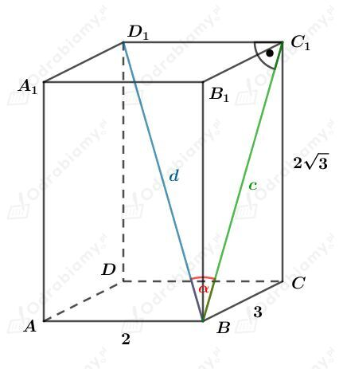
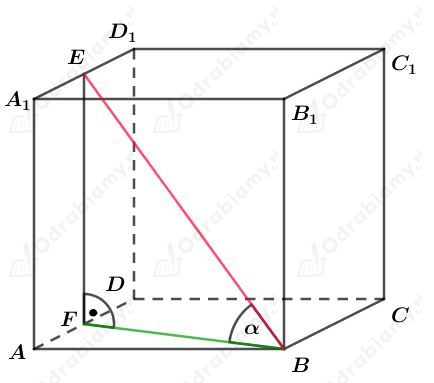
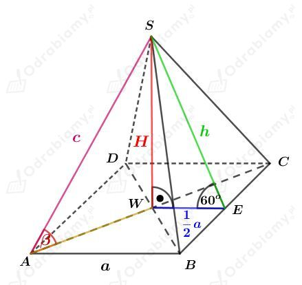
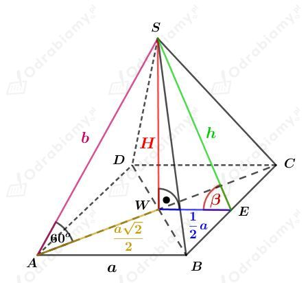
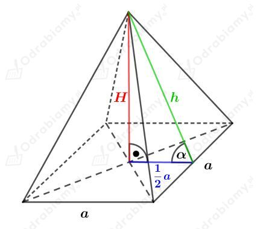
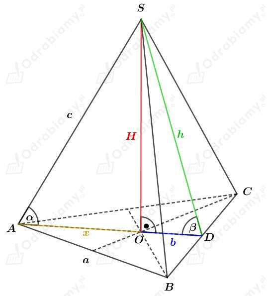
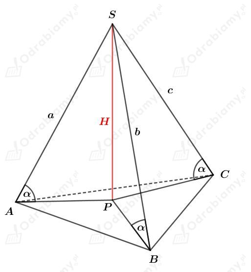
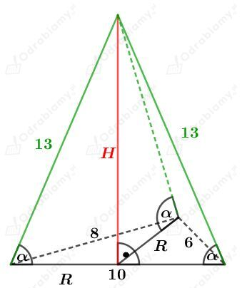
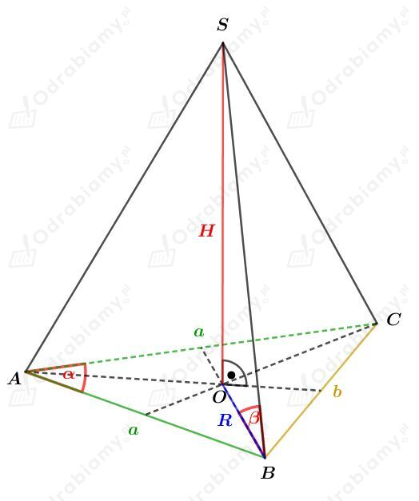

Dany jest prostopadłościan o krawędziach długości 2 cm, 3 cm, 2√3 cm.
Wyznaczmy pola tych ścian. Mamy:
Zatem ściana o bokach długości 3 cm i 2√3 cm ma największe pole.
Rysunek:

Obliczmy długość przekątnej prostopadłościanu. Mamy:
Korzystając z twierdzenia Pitagorasa dla trójkąta BCC1 mamy:
Korzystając z twierdzenia cosinusów dla trójkąta BC1D1 otrzymujemy:
Oznaczmy przez a długość krawędzi podanego sześcianu.
a)
Odcinek A1E stanowi połowę boku sześcianu, więc
Odcinek A1B jest przekątną kwadratu o boku długości a, więc
Korzystając z twierdzenia Pitagorasa dla trójkąta BEA1 mamy:
Wyznaczmy sinus kąta, który odcinek BE tworzy ze ścianą ABB1A1. Mamy:
b)
Rysunek:

Z przykładu a) wiemy, że
Odcinek EF ma taką samą długość, jak krawędź sześcianu, czyli
Wyznaczmy sinus kąta, który odcinek BE tworzy z podstawą ABCD. Mamy:
Rysunek:
Zauważmy, że z twierdzenia Pitagorasa otrzymujemy:
Korzystając ze wzoru na długość przekątnej prostopadłościanu wiemy, że
czyli
Wyznaczmy cosinusy kątów 𝛼, 𝛽 i 𝛾. Mamy:
Wyznaczmy sumę kwadratów tych wyrażeń. Mamy:
Korzystając z równości wyznaczonych przez twierdzenie Pitagorasa mamy:
Korzystając ze wzoru na długość przekątnej prostopadłościanu mamy:
co kończy dowód.
a)
Rysunek pomocniczy:

Korzystając z funkcji sinus dla trójkąta EWS mamy:
Korzystając z funkcji sinus dla trójkąta EWS mamy:
Korzystając z twierdzenia Pitagorasa dla trójkąta AWS mamy:
Korzystając z funkcji sinus dla trójkąta AWS mamy:
b)
Rysunek:

Korzystając z funkcji tangens dla trójkąta AWS mamy:
Korzystając z twierdzenia Pitagorasa dla trójkąta EWS mamy:
Korzystając z funkcji cosinus dla trójkąta EWS mamy:
Rysunek:

Wiemy, że pole kwadratu będącego podstawą tego ostrosłupa wynosi P, zatem
czyli
Korzystając z funkcji tangens mamy:
Korzystając z twierdzenia Pitagorasa otrzymujemy:
Korzystając z tożsamości tg𝛼=sin𝛼/cos𝛼 mamy:
Korzystając z jedynki trygonometrycznej mamy:
Obie strony równości są dodatnie, więc ostatecznie otrzymujemy:
Wyznaczmy pole powierzchni całkowitej tego ostrosłupa. Mamy:
Wyznaczmy objętość tego ostrosłupa. Mamy:
Rysunek:

Podstawą tego ostrosłupa jest trójkąt równoboczny, zatem pole powierzchni podstawy wynosi
Wiemy, że objętość tego ostrosłupa wynosi
stąd otrzymujemy równanie
a)
Odcinek x stanowi 2/3 długości wysokości trójkąta równobocznego będącego podstawą tego ostrosłupa. Mamy stąd
Korzystając z twierdzenia Pitagorasa dla trójkąta AOS mamy:
Wyznaczmy cosinus kąta 𝛼. Mamy:
b)
Odcinek x stanowi 1/3 długości wysokości trójkąta równobocznego będącego podstawą tego ostrosłupa. Mamy stąd
Korzystając z twierdzenia Pitagorasa dla trójkąta ODS mamy:
Wyznaczmy cosinus kąta 𝛽. Mamy:
Uzasadnimy, że w ostrosłupie spodek wysokości jest środkiem okręgu opisanego na podstawie tego ostrosłupa.
Należy zatem pokazać, że wszystkie wierzchołki podstawy leżą w takiej samej odległości od spodka wysokości.
Dla ostrosłupa trójkątnego otrzymujemy:

Zauważmy, że
Zatem
Jeśli odcinki te są równej długości, to z twierdzenia Pitagorasa mamy
Zatem wierzchołki podstawy leżą w takiej samej odległości od spodka wysokości.
Zatem spodek wysokości jest środkiem okręgu opisanego na tej podstawie.
Możemy zauważyć, że dla ostrosłupa czworokątnego otrzymamy analogiczne zależności:
Wobec tego otrzymujemy, że
Zatem wierzchołki podstawy leżą w takiej samej odległości od spodka wysokości.
Zatem spodek wysokości jest środkiem okręgu opisanego na tej podstawie.
Analogicznie będzie dla ostrosłupa pięciokątnego, sześciokątnego, itd.
Podstawą ostrosłupa jest trójkąt o bokach długości 6, 8 i 10.
Zauważmy, że
zatem na mocy twierdzenia odwrotnego do twierdzenia Pitagorasa, podany trójkąt jest prostokątny.
Rysunek:

Długość promienia okręgu opisanego na trójkącie prostokątnym jest równa połowie długości przeciwprostokątnej, zatem
Wyznaczmy cosinus kąta 𝛼. Mamy:
Rysunek:

Korzystając z twierdzenia cosinusów dla trójkąta ABC mamy:
Obliczmy pole powierzchni podstawy tego ostrosłupa. Korzystając ze wzoru na pole trójkąta mamy:
Korzystając ze wzoru na pole trójkąta z promieniem R okręgu opisanego na tym trójkącie mamy:
Podstawiając otrzymane b z twierdzenia cosinusów mamy:
Korzystając ze wzoru na cosinus podwojonego kąta cos2𝛼=1-2sin2𝛼 mamy:
Korzystając z funkcji tangens mamy:
Podstawiając wyznaczone R mamy:
Wyznaczmy objętość tego ostrosłupa. Mamy: